The important classes of organic compounds known as alcohols, phenols, ethers, amines and halides consist of alkyl and/or aryl groups bonded to hydroxyl, alkoxyl, amino and halo substituents respectively. If these same functional groups are attached to an acyl group (RCO–) their properties are substantially changed, and they are designated as carboxylic acid derivatives. Carboxylic acids have a hydroxyl group bonded to an acyl group, and their functional derivatives are prepared by replacement of the hydroxyl group with substituents, such as halo, alkoxyl, amino and acyloxy. Some examples of these functional derivatives were displayed earlier. The following table lists some representative derivatives and their boiling points. An aldehyde and ketone of equivalent molecular weight are also listed for comparison. Boiling points are given for 760 torr (atmospheric pressure), and those listed as a range are estimated from values obtained at lower pressures. As noted earlier, the relatively high boiling point of carboxylic acids is due to extensive hydrogen bonded dimerization. Similar hydrogen bonding occurs between molecules of 1º and 2º-amides (amides having at least one N–H bond), and the first three compounds in the table serve as hydrogen bonding examples.
Formula
IUPAC Name
Molecular Weight
Boiling Point
Water Solubility
The last nine entries in the above table cannot function as hydrogen bond donors, so hydrogen bonded dimers and aggregates are not possible. The relatively high boiling points of equivalent 3º-amides and nitriles are probably due to the high polarity of these functions. Indeed, if hydrogen bonding is not present, the boiling points of comparable sized compounds correlate reasonably well with their dipole moments.
Three examples of acyl groups having specific names were noted earlier. These are often used in common names of compounds. In the following examples the IUPAC names are color coded, and common names are given in parentheses.
• Esters: The alkyl group is named first, followed by a derived name for the acyl group, the oic or ic suffix in the acid name is replaced by ate. e.g. CH3(CH2)2CO2C2H5 is ethyl butanoate (or ethyl butyrate). Cyclic esters are called lactones. A Greek letter identifies the location of the alkyl oxygen relative to the carboxyl carbonyl group. • Acid Halides: The acyl group is named first, followed by the halogen name as a separate word. e.g. CH3CH2COCl is propanoyl chloride (or propionyl chloride). • Anhydrides: The name of the related acid(s) is used first, followed by the separate word "anhydride". e.g. (CH3(CH2)2CO)2O is butanoic anhydride & CH3COOCOCH2CH3 is ethanoic propanoic anhydride (or acetic propionic anhydride). • Amides: The name of the related acid is used first and the oic acid or ic acid suffix is replaced by amide (only for 1º-amides). e.g. CH3CONH2 is ethanamide (or acetamide). 2º & 3º-amides have alkyl substituents on the nitrogen atom. These are designated by "N-alkyl" term(s) at the beginning of the name. e.g. CH3(CH2)2CONHC2H5 is N-ethylbutanamide; & HCON(CH3)2 is N,N-dimethylmethanamide (or N,N-dimethylformamide). Cyclic amides are called lactams. A Greek letter identifies the location of the nitrogen on the alkyl chain relative to the carboxyl carbonyl group. • Nitriles: Simple acyclic nitriles are named by adding nitrile as a suffix to the name of the corresponding alkane (same number of carbon atoms). Chain numbering begins with the nitrile carbon . Commonly, the oic acid or ic acid ending of the corresponding carboxylic acid is replaced by onitrile. A nitrile substituent, e.g. on a ring, is named carbonitrile. e.g. (CH3)2CHCH2C≡N is 3-methylbutanenitrile (or isovaleronitrile).
This is probably the single most important reaction of carboxylic acid derivatives. The overall transformation is defined by the following equation, and may be classified either as nucleophilic substitution at an acyl group or as acylation of a nucleophile. For certain nucleophilic reagents the reaction may assume other names as well. If Nuc-H is water the reaction is often called hydrolysis, if Nuc–H is an alcohol the reaction is called alcoholysis, and for ammonia and amines it is called aminolysis.
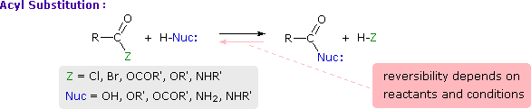
Different carboxylic acid derivatives have very different reactivities, acyl chlorides and bromides being the most reactive and amides the least reactive, as noted in the following qualitatively ordered list. The change in reactivity is dramatic. In homogeneous solvent systems, reaction of acyl chlorides with water occurs rapidly, and does not require heating or catalysts. Amides, on the other hand, react with water only in the presence of strong acid or base catalysts and external heating.
Reactivity: acyl halides > anhydrides >> esters ≈ acids >> amides
Because of these differences, the conversion of one type of acid derivative into another is generally restricted to those outlined in the following diagram. Methods for converting carboxylic acids into these derivatives were shown in a previous section, but the amide and anhydride preparations were not general and required strong heating. A better and more general anhydride synthesis can be achieved from acyl chlorides, and amides are easily made from any of the more reactive derivatives. Specific examples of these conversions will be displayed by clicking on the product formula. The carboxylic acids themselves are not an essential part of this diagram, although all the derivatives shown can be hydrolyzed to the carboxylic acid state (light blue formulas and reaction arrows). Base catalyzed hydrolysis produces carboxylate salts.
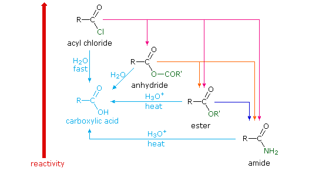
Before proceeding further, it is important to review the general mechanism by means of which all these acyl transfer or acylation reactions take place. Indeed, an alert reader may well be puzzled by the facility of these nucleophilic substitution reactions. After all, it was previously noted that halogens bonded to sp2 or sp hybridized carbon atoms do not usually undergo substitution reactions with nucleophilic reagents. Furthermore, such substitution reactions of alcohols and ethers are rare, except in the presence of strong mineral acids. Clearly, the mechanism by which acylation reactions occur must be different from the SN1 and SN2 procedures described earlier. In any substitution reaction two things must happen. The bond from the substrate to the leaving group must be broken, and a bond to the replacement group must be formed. The timing of these events may vary with the reacting system. In nucleophilic substitution reactions of alkyl compounds examples of bond-breaking preceding bond-making (the SN1 mechanism), and of bond-breaking and bond-making occurring simultaneously (the SN2 mechanism) were observed. On the other hand, for most cases of electrophilic aromatic substitution bond-making preceded bond-breaking.
As illustrated in the following diagram, acylation reactions generally take place by an addition-elimination process in which a nucleophilic reactant bonds to the electrophilic carbonyl carbon atom to create a tetrahedral intermediate. This tetrahedral intermediate then undergoes an elimination to yield the products. In this two-stage mechanism bond formation occurs before bond cleavage, and the carbonyl carbon atom undergoes a hybridization change from sp2 to sp3 and back again. The facility with which nucleophilic reagents add to a carbonyl group was noted earlier for aldehydes and ketones.
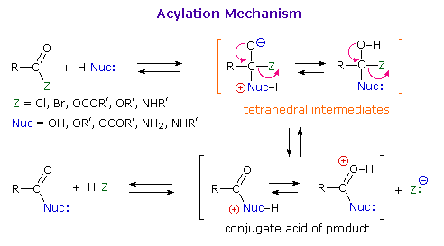
Acid and base-catalyzed variations of this mechanism will be displayed in turn as the "Mechanism Toggle" button is clicked. Also, a specific example of acyl chloride formation from the reaction of a carboxylic acid with thionyl chloride will be shown. The number of individual steps in these mechanisms vary, but the essential characteristic of the overall transformation is that of addition followed by elimination. Acid catalysts act to increase the electrophilicity of the acyl reactant; whereas, base catalysts act on the nucleophilic reactant to increase its reactivity. In principle all steps are reversible, but in practice many reactions of this kind are irreversible unless changes in the reactants and conditions are made. The acid-catalyzed formation of esters from carboxylic acids and alcohols, described earlier, is a good example of a reversible acylation reaction, the products being determined by the addition or removal of water from the system. The reaction of an acyl chloride with an alcohol also gives an ester, but this conversion cannot be reversed by adding HCl to the reaction mixture.
Mechanisms of Ester Cleavage
Esters are one of the most common carboxylic derivatives. Cleavage of the alkyl moiety in an ester may be effected in several different ways, the most common being the acyl transfer mechanism described above; however, other mechanisms have been observed. For examples and further discussion Click Here.
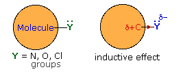
Thus far we have not explained the marked variation, noted above, in the reactivity of different carboxylic acid derivatives. The distinguishing carbonyl substituents in these compounds are: chloro (acyl chlorides), acyloxy (anhydrides), alkoxy (esters) and amino (amides). All of these substituents have bonds originating from atoms of relatively high electronegativity (Cl, O & N). They are therefore inductively electron withdrawing when bonded to carbon, as shown in the diagram on the right. The consequences of such inductive electron withdrawal on the acidity of carboxylic acids was previously noted. When these substituents are attached to an sp2 carbon that is part of a π-electron system, a similar inductive effect occurs, but n-π conjugation (p-π conjugation) moves electron density in the opposite direction. By clicking the "Toggle Effect" button the electron shift in both effects will be displayed sequentially. This competition between inductive electron withdrawal and conjugative electron donation was discussed earlier in the context of substituent effects on electrophilic aromatic substitution. Here, it was noted that amino groups were strongly electron donating (resonance effect >> inductive effect), alkoxy groups were slightly less activating, acyloxy groups still less activating (resonance effect > inductive effect) and chlorine was deactivating (inductive effect > resonance effect). In the illustration on the right, R and Z represent the remainder of a benzene ring. This analysis also predicts the influence these substituent groups have on the reactivity of carboxylic acid derivatives toward nucleophiles (Z = O in the illustration). Inductive electron withdrawal by Y increases the electrophilic character of the carbonyl carbon, and increases its reactivity toward nucleophiles. Thus, acyl chlorides (Y = Cl) are the most reactive of the derivatives. Resonance electron donation by Y decreases the electrophilic character of the carbonyl carbon. The strongest resonance effect occurs in amides, which exhibit substantial carbon-nitrogen double bond character and are the least reactive of the derivatives. An interesting exception to the low reactivity of amides is found in beta-lactams such as penicillin G. The angle strain introduced by the four-membered ring reduces the importance of resonance, the non-bonding electron pair remaining localized on the pyramidally shaped nitrogen. Finally, anhydrides and esters have intermediate reactivities, with anhydrides being more reactive than esters.
Carbonyl Reactivity and IR Stretching Frequency An interesting correlation between the reactivity of carboxylic acid derivatives and their carbonyl stretching frequencies exists. For a discussion of this topic Click Here.
From the previous discussions you should be able to predict the favored product from each of the following reactions. The acyl derivative is the reactant on the left, and the nucleophilic reactant is to its right. Click the "Show Products" button to display the answers.
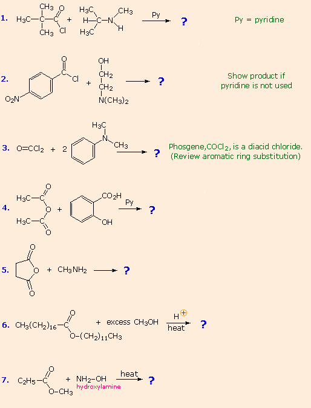
The first three examples concern reactions of acyl chlorides, the most reactive acylating reagents discussed here. Although amines are among the most reactive nucleophiles, only 1º and 2º-amines give stable amide products. Reaction of 3º-amines with strong acylating reagents may generate acylammonium species reversibly (see below), but these are as reactive as acyl chlorides and will have only a very short existence. This explains why reactions #2 & 3 do not give amide products.
Reactions #4 & 5 display the acylating capability of anhydrides. Bear in mind that anhydrides may also be used as reagents in Friedel-Crafts acylation reactions. Esters are less reactive acylating reagents than anhydrides, and the ester exchange reaction (#6) requires a strong acid or base catalyst. The last example demonstrates that nitrogen is generally more nucleophilic than oxygen. Indeed, it is often possible to carry out reactions of amines with acyl chlorides and anhydrides in aqueous sodium hydroxide solution! Not only is the amine more nucleophilic than water, but the acylating reagent is generally not soluble in or miscible with water, reducing the rate of its hydrolysis. No acylation reactions of amides were shown in these problems. The most important such reaction is hydrolysis, and this normally requires heat and strong acid or base catalysts. One example, illustrating both types of catalysis, is shown here. Mechanisms for catalyzed reactions of this kind were presented earlier.
Other Acylation Reagents and Techniques Because acylation is such an important and widely used transformation, the general reactions described above have been supplemented by many novel procedures and reagents that accomplish similar overall change. These are normally beyond the scope of an introductory text, but a short description of some of these methods is provided for the interested reader by Clicking Here.
Although they do not have a carbonyl group, nitriles are often treated as derivatives of carboxylic acids. Hydrolysis of nitriles to carboxylic acids was described earlier, and requires reaction conditions (catalysts and heat) similar to those needed to hydrolyze amides. This is not surprising, since addition of water to the carbon-nitrogen triple bond gives an imino intermediate which tautomerizes to an amide.
Reductions of carboxylic acid derivatives might be expected to lead either to aldehydes or alcohols, functional groups having a lower oxidation state of the carboxyl carbon. Indeed, it was noted earlier that carboxylic acids themselves are reduced to alcohols by lithium aluminum hydride. At this point it will be useful to consider three kinds of reductions: (i) catalytic hydrogenation (ii) complex metal hydride reductions (iii) diborane reduction.
As a rule, the carbonyl group does not add hydrogen as readily as do the carbon-carbon double and triple bonds. Thus, it is fairly easy to reduce an alkene or alkyne function without affecting any carbonyl functions in the same molecule. By using a platinum catalyst and increased temperature and pressure, it is possible to reduce aldehydes and ketones to alcohols, but carboxylic acids, esters and amides are comparatively unreactive. The exceptional reactivity of acyl halides, on the other hand, facilitates their reduction under mild conditions, by using a poisoned palladium catalyst similar to that used for the partial reduction of alkynes to alkenes. This reduction stops at the aldehyde stage, providing us with a useful two-step procedure for converting carboxylic acids to aldehydes, as reaction #1 below demonstrates. Equivalent reductions of anhydrides have not been reported, but we might speculate that they would be reduced more easily than esters. The only other reduction of a carboxylic acid derivative that is widely used is that of nitriles to 1º-amines. Examples of these reductions are provided in the following diagram.
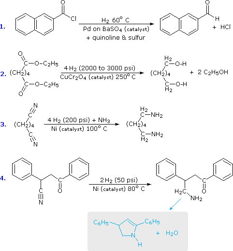
The second and third equations illustrate the extreme difference in hydrogenation reactivity between esters and nitriles. This is further demonstrated by the last reaction, in which a nitrile is preferentially reduced in the presence of a carbonyl group and two benzene rings. The resulting 1º-amine immediately reacts with the carbonyl function to give a cyclic enamine product (colored light blue). In most nitrile reductions ammonia is added to inhibit the formation of a 2º-amine by-product. This may occur by way of an intermediate aldehyde imine created by addition of the first equivalent of hydrogen. The following equations show how such an imine species might react with the 1º-amine product to give a substituted imine (2nd equation), which would then add hydrogen to generate a 2º-amine. Excess ammonia shifts the imine equilibrium to the left, as written below.
The use of lithium aluminum hydride (LiAlH4) and sodium borohydride (NaBH4) as reagents for the reduction of aldehydes and ketones to 1º and 2º-alcohols respectively has been noted. Of these, lithium aluminum hydride, often abbreviated LAH, is the most useful for reducing carboxylic acid derivatives. Thanks to its high reactivity, LAH easily reduces all classes of carboxylic acid derivatives, generally to the –1 oxidation state. Acids, esters, anhydrides and acyl chlorides are all reduced to 1º-alcohols, and this method is superior to catalytic reduction in most cases. Since acyl chlorides and anhydrides are expensive and time consuming to prepare, acids and esters are the most commonly used reactants for this transformation. As in the reductions of aldehydes and ketones, the first step in each case is believed to be the irreversible addition of hydride to the electrophilic carbonyl carbon atom. Coordinative bonding of the carbonyl oxygen to a Lewis acidic metal (Li or Al) undoubtedly enhances that carbon's electrophilic character. This hydride addition is shown in the following diagrams, with the hydride-donating moiety being written as AlH4(–). All four hydrogens are potentially available to the reduction, but when carboxylic acids are reduced, one of the hydrides reacts with the acidic O–H to generate hydrogen gas. Although the lithium is not shown, it will be present in the products as a cationic component of ionic salts. Amides are reduced to amines by treatment with LAH, and this has proven to be one of the most general methods for preparing all classes of amines (1º, 2º & 3º). Because the outcome of LAH reduction is so different for esters and amides, we must examine plausible reaction mechanisms for these reactions to discover a reason for this divergent behavior.
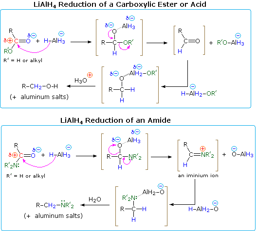
One explanation of the different course taken by the reductions of esters and amides lies in the nature of the different hetero atom substituents on the carbonyl group (colored green in the diagram). Nitrogen is more basic than oxygen, and amide anions are poorer leaving groups than alkoxide anions. Furthermore, oxygen forms especially strong bonds to aluminum. Addition of hydride produces a tetrahedral intermediate, shown in brackets, which has a polar oxygen-aluminum bond. Neither the hydrogen nor the alkyl group (R) is a possible leaving group, so if this tetrahedral species is to undergo an elimination to reform a hetero atom double bond, one of the two remaining substituents must be lost. For the ester this is an easy choice (described by the curved arrows). By eliminating an aluminum alkoxide (R'O–Al), an aldehyde is formed, and this is quickly reduced to the salt of a 1º-alcohol by LAH. In the case of the amide, aldehyde formation requires the loss of an aluminum amide (R'2N–Al), an unlikely process. Alternatively, the more basic nitrogen may act to eject a metal oxide species (e.g. Al–O(–)), and the resulting iminium double bond would then be reduced to an amine. This is the course followed by most amide reductions; but in the case of 1º-amides, the acidity of the nitrogen hydrogens coupled with the basicity of hydride enables a facile elimination of the oxygen (as an oxide moiety). The resulting nitrile intermediate is then reduced to a 1º-amine. Nitriles are in fact a major product when less than a full equivalency of LiAlH4 is used. A mechanism will be shown above by clicking on the diagram.
Lithium aluminum hydride reduces nitriles to 1º-amines, as shown in the following equation. An initial hydride addition to the electrophilic nitrile carbon atom generates the salt of an imine intermediate. This is followed by a second hydride transfer, and the resulting metal amine salt is hydrolyzed to a 1º-amine. This method provides a useful alternative to the catalytic reduction of nitriles, described above, when alkene or alkyne functions are present.
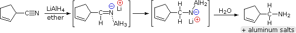
In contrast to the usefulness of lithium aluminum hydride in reducing various carboxylic acid derivatives, sodium borohydride is seldom chosen for this purpose. First, NaBH4 is often used in hydroxylic solvents (water and alcohols), and these would react with acyl chlorides and anhydrides. Furthermore, it is sparingly soluble in relatively nonpolar solvents, particularly at low temperatures. Second, NaBH4 is much less reactive than LAH, failing to reduce amides and acids (they form carboxylate salts) at all, and reducing esters very slowly. Since relatively few methods exist for the reduction of carboxylic acid derivatives to aldehydes, it would be useful to modify the reactivity and solubility of LAH to permit partial reductions of this kind to be achieved. The most fruitful approach to this end has been to attach alkoxy or alkyl groups on the aluminum. This not only modifies the reactivity of the reagent as a hydride donor, but also increases its solubility in nonpolar solvents. Two such reagents will be mentioned here; the reactive hydride atom is colored blue.
Lithium tri-tert-butoxyaluminohydride (LtBAH), LiAl[OC(CH3)3]3H : Soluble in THF, diglyme & ether. Diisobutylaluminum hydride (DIBAH), [(CH3)2CHCH2]2AlH : Soluble in toluene, THF & ether.
Each of these reagents carries one equivalent of hydride. The first (LtBAH) is a complex metal hydride, but the second is simply an alkyl derivative of aluminum hydride. In practice, both reagents are used in equimolar amounts, and usually at temperatures well below 0 ºC. The following examples illustrate how aldehydes may be prepared from carboxylic acid derivatives by careful application of these reagents. A temperature of -78 ºC is easily maintained by using dry-ice as a coolant. The reduced intermediates that lead to aldehydes will be displayed on clicking the "Show Intermediates" button. With excess reagent at temperatures above 0 ºC most carboxylic acid derivatives are reduced to alcohols or amines.
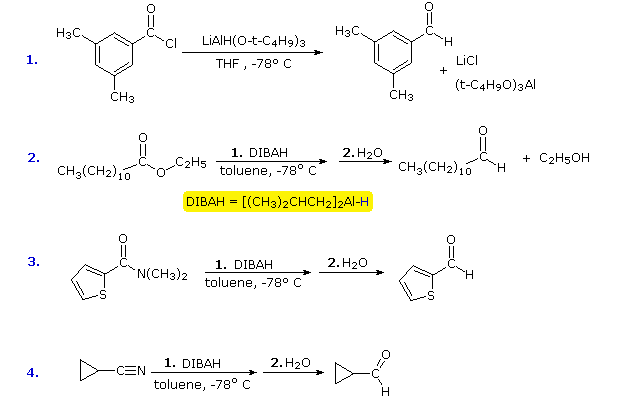
The reducing characteristics of diborane (disassociated to BH3 in ether or THF solution) were first introduced as addition reactions to alkenes and alkynes. This remains a primary application of this reagent, but it also effects rapid and complete reduction of carboxylic acids, amides and nitriles. Other than LAH, this reagent provides one of the best methods for reducing carboxylic acids to 1º-alcohols.
The following table summarizes the influence each of the reducing systems discussed above has on the different classes of carboxylic acid derivatives. Note that LAH is the strongest reducing agent listed, and it reduces all the substrates. In a similar sense, acyl chlorides are the most reactive substrate. They are reduced by all the reagents, but only a few of these provide synthetically useful transformations.
Aldehydes& Ketones
CarboxylicAcids
CarboxylicEsters
AcylChlorides
Amides
Nitriles
H2 & catalyst
NaBH4polar solvent
LiAlH4ether or THF
LiAlH(Ot-Bu)31 eq. in THF
(iso-Bu)2AlH1 eq. in toluene
B2H6THF
Color Code
The facile addition of alkyl lithium reagents and Grignard reagents to aldehydes and ketones has been described. These reagents, which are prepared from alkyl and aryl halides, are powerful nucleophiles and very strong bases. Reaction of an excess of these reagents with acyl chlorides, anhydrides and esters leads to alcohol products, in the same fashion as the hydride reductions. As illustrated by the following equations (shaded box), this occurs by sequential addition-elimination-addition reactions, and finishes with hydrolysis of the resulting alkoxide salt. A common bonding pattern is found in all these carbonyl reactions. The organometallic reagent is a source of a nucleophilic alkyl or aryl group (colored purple), which bonds to the electrophilic carbon of the carbonyl group (colored orange). Substituent Y (colored green) is eliminated from the tetrahedral intermediate as its anion. The aldehyde or ketone product of this elimination then adds a second equivalent of the reagent.
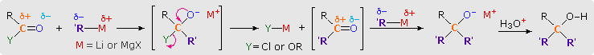
Reactions of this kind are important synthetic transformations, because they permit simple starting compounds to be joined to form more complex structures. Esters are the most common carbonyl reactants, since they are cheaper and less hazardous to use than acyl chlorides and anhydrides. Most esters react with organometallic reagents to give 3º-alcohols; but formate esters (R=H) give 2º-alcohols. Some examples of these reactions are provided in the following diagram. As demonstrated by the last equation, lactones undergo ring opening and yield diol products.
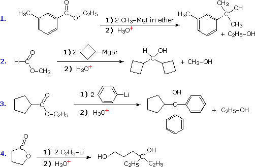
The acidity of carboxylic acids and 1º & 2º-amides acts to convert Grignard and alkyl lithium reagents to hydrocarbons (see equations), so these functional groups should be avoided when these reagents are used.
Since acyl chlorides are more reactive than esters, isolation of the ketone intermediate formed in their reactions with organometallic reagents becomes an attractive possibility. To achieve this selectivity we need to convert the highly reactive Grignard and lithium reagents to less nucleophilic species. Two such modifications that have proven effective are the Gilman reagent (R2CuLi) and organocadmium reagents (prepared in the manner shown).
Specific examples of ketone synthesis using these reagents are presented in the following diagram. The second equation demonstrates the low reactivity of organocadmium reagents, inasmuch as the ester function is unchanged. Another related approach to this transformation is illustrated by the third equation. Grignard reagents add to nitriles, forming a relatively stable imino derivative which can be hydrolyzed to a ketone. Imines themselves do not react with Grignard reagents.
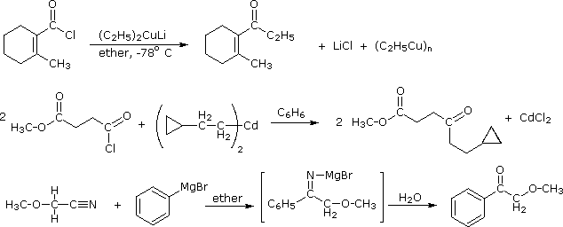
Amides are very polar, thanks to the n-π conjugation of the nitrogen non-bonded electron pair with the carbonyl group. This delocalization substantially reduces the basicity of these compounds (pKa ca. –1) compared with amines (pKa ca. 11). When electrophiles bond to an amide, they do so at the oxygen atom in preference to the nitrogen. As shown below, the oxygen-bonded conjugate acid is stabilized by resonance charge delocalization; whereas, the nitrogen-bonded analog is not. One practical application of this behavior lies in the dehydration of 1º-amides to nitriles by treatment with thionyl chloride. This reaction is also illustrated in the following diagram. Other dehydrating agents such as P2O5 effect the same transformation.
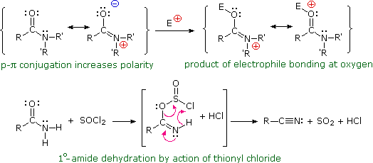
Pyrolytic syn-Eliminations Ester derivatives of alcohols may undergo unimolecular syn-elimination on heating. To see examples of these Click Here
The following problems review aspects of the chemistry of carboxylic acids and their derivatives. The first two questions concern their nomenclature. The third reviews three common reactions, applied to eight carbonyl compounds, including aldehydes and ketones. The fourth question asks you to draw the structural formulas for the products of more than fifty possible reactions of some carboxylic acids. The fifth problem concerns hydrolysis with aqueous acid or base, and requires drawing product structures for both conditions.
For a summary of the fundamental reactions of carboxylic acid derivatives Click Here
This page is the property of The Edvibe Team. Comments, questions and errors should be sent to contact@edvibe.co.ke. These pages are provided to the IOCD to assist in capacity building in chemical education. 05/05/2013